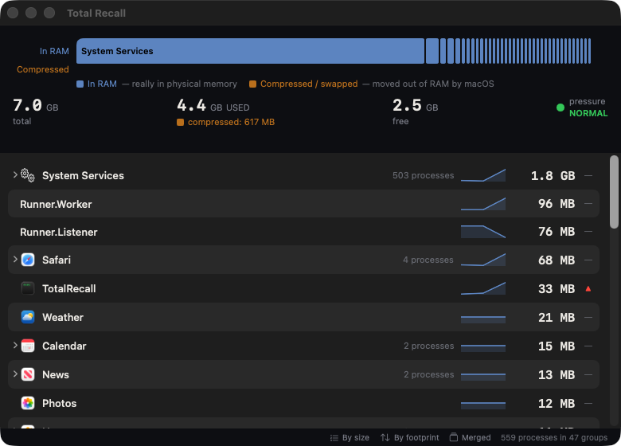
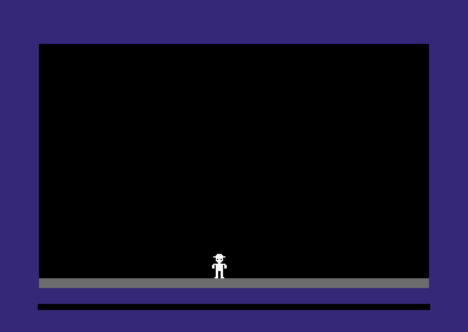
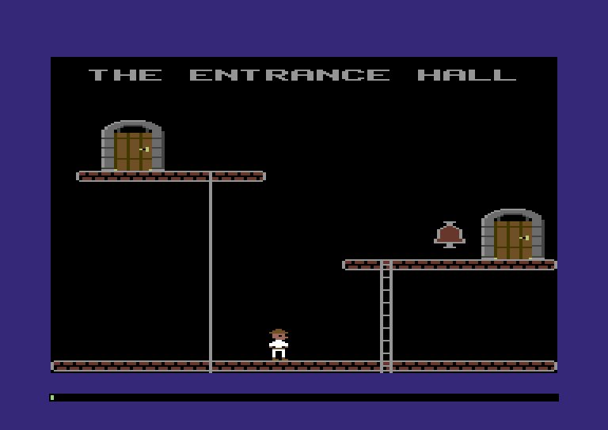
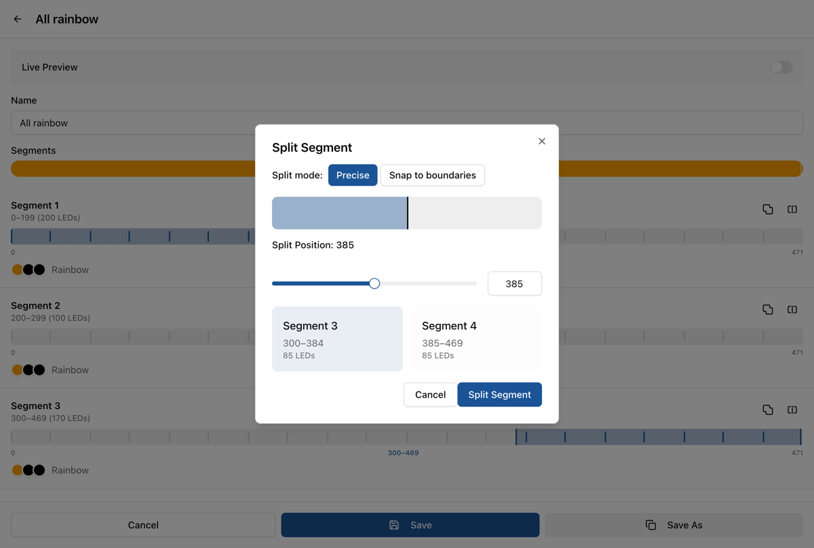

A menu bar app that shows where your Mac's memory actually went. It groups processes by the app they belong to, and it knows how particular apps split themselves up, so Claude Code shows up session by session, labeled with the folder each one is working in. It lives by one rule: blue is RAM, amber is not.

The Memory River shows the gap between what an app is charged for and what's really in RAM. That gap is usually why a machine with "plenty of free memory" still feels slow.
Software archaeology. I took the original 1984 Commodore 64 disk of The Castles of Dr. Creep and am working it from disk image to 6502 assembly to Zig, until it runs natively on a Mac and in the browser. It's how I learned Zig, and I wrote a tutorial as I went.


First signs of life, then the Entrance Hall, running on a from-scratch 6502 interpreter with original routines swapped out for native Zig one at a time.
A CLI that reads a TypeScript codebase and writes a plain-text report of duplication and tangled modules, made to be read by an LLM inside a refactoring loop.
A new UI for WLED, the open source firmware that drives ESP32-based LED lighting controllers. It's served straight from the controller, with live state kept in sync through TanStack Query.

Splitting an LED strip into segments, with a snap-to-boundaries mode.
A small Mac app for old family-photo scans. Drag in a faded print or a whole folder and watch each one come back, with a before-and-after slider: auto-contrast, upscaling, and face restoration. It all runs on-device, so nothing leaves your Mac.
The heavy lifting is done by off-the-shelf models from Hugging Face, Real-ESRGAN for upscaling and GFPGAN for faces. It started as a Python command-line tool, then I rebuilt it as a native app with the same models converted to Core ML.
Publishes any Apple Note as a webpage, with its images, videos and other attachments right where they were in the note. You get a folder of static files to upload anywhere, or it can publish straight to Cloudflare for you.
Ask for a shell command in plain English and get one back. Before it answers, the model reads the man pages on your machine, so the flags match what you actually have installed.
$ heyman -- compress the logs directory into a tarball, excluding .tmp files
tar --exclude='*.tmp' -czf logs.tar.gz logs
$ heyman stat print the size in bytes and modification time of notes.txt
stat -f "%z %Sm" notes.txt
That second answer is the BSD stat that ships with macOS. On Linux you get GNU syntax, because the model read a different man page.
The Queens logic puzzle: one queen in every row, column and colored region, and no two queens touching. Boards from 5×5 to 9×9, tap to cycle a cell, drag to paint, hints when you're stuck, and a URL for every board so you can send one to a friend.
A bit of an art project. It takes your rides, runs and hikes from Strava and generates a 3D landscape from nothing but those paths, so you can see what the terrain would look like if the only thing that shaped it was where you've been.
An experiment in semantic analysis. Paste in a document and it highlights which sentences add new meaning and which are just repeating what's already been said: the repeats fade, and the new ideas stay bright.
Our app helps teams ship faster.It helps teams move quickly and ship sooner.Shipping fast matters to every team.It also runs entirely offline, on any laptop.Teams ship faster with it.Pricing starts at zero.
Roughly what it does to a pitch. Under the hood it compares embeddings of a rolling window of sentences.
I'm a product engineer: I work across the whole stack, but what I love is shipping real, working products that people use. So I pay special attention to the parts they touch: the UI, how it feels to interact with, and making data readable through good visualization.
These days I'm at The General Partnership, where I embed with startups and help them get going: setting up how the team builds software, building the first proof of concept, and getting an early app ready for real users. My sweet spot is a team of 2 to 10 people getting a new company off the ground.
I've been at this for more than thirty years. I started at Netscape on the original Navigator browser, stayed through the early days of Mozilla, took a detour to teach high school math, and found my way back through Macromedia and OSAF, where I fell for Python. Then came Metaweb's graph database, which Google bought and turned into the Knowledge Graph. At Google I moved to Chrome, worked on IndexedDB, and was tech lead for Service Worker. After that I helped start UrbanFootprint, building geospatial tools for urban planners, which is a big part of why this site is a map.
Lately I'm loving AI-assisted development. I've always had more ideas than time, and a compulsion to make them real. Now I can build far more of them, far faster.
When I'm not coding I'm probably on a bike (mountain, road, or loaded up for a bikepacking trip), reading comics, watching a movie, playing a board game, or cheering for the Valkyries.
Photo goes here (Alec is finding one)
Now
The General Partnership
Focus
Full-stack product work, especially UI, interaction and data viz